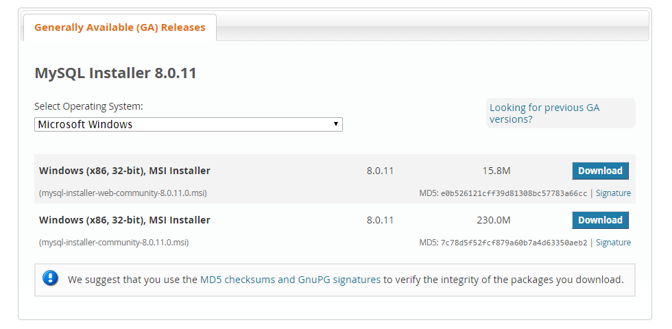
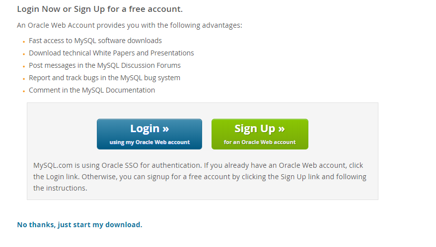
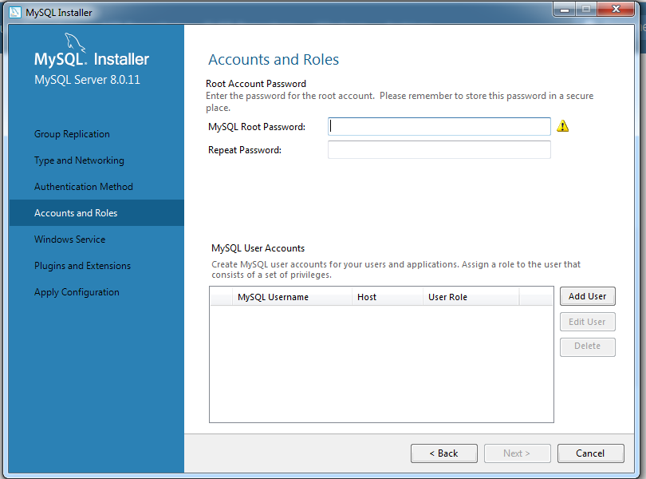
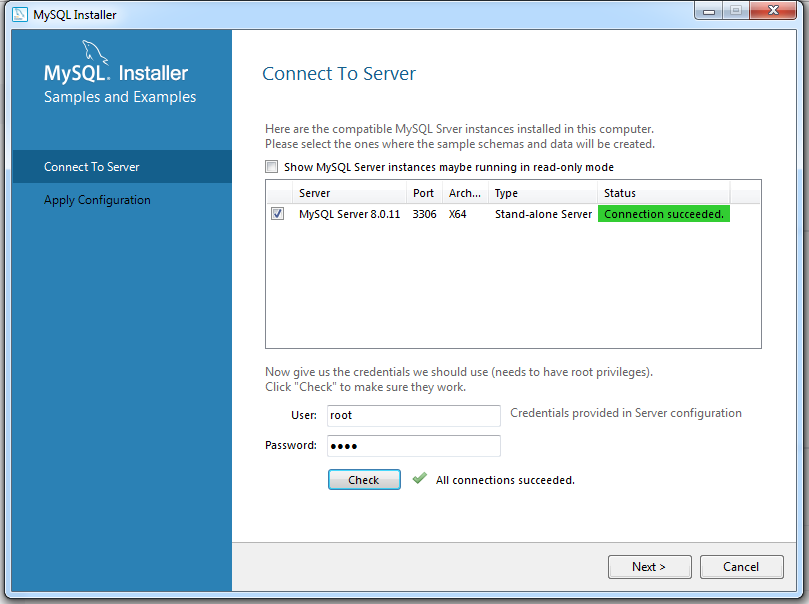
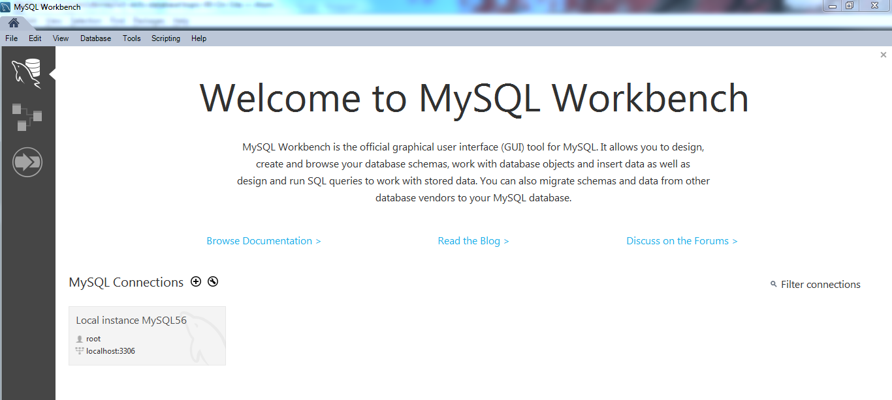
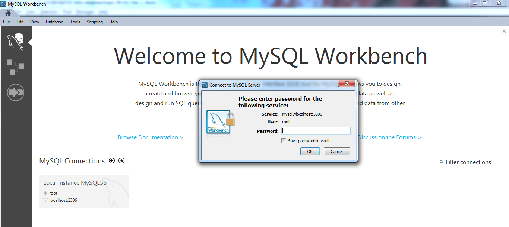
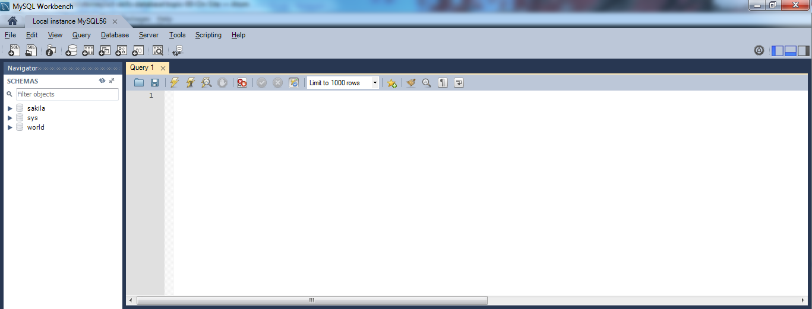

In this lab, you will install MySQL and log in to MySQL Workbench.
MySQL is an open-source relational database management system (RDBMS). The acronym "SQL" (sometimes pronounced "sequel") stands for Structured Query Language. SQL is a standard computer language for relational database management and data manipulation. SQL is used to query, insert, update and modify data in a database.
MySQL Workbench is a visual database design tool that integrates SQL development, administration, database design, creation and maintenance into a single integrated development environment for the MySQL database system.
In this lab, you will install the various components that make up a MySQL database, including the MySQL server and the MySQL Workbench application.
You can download the MySQL installer here: https://dev.mysql.com/downloads/installer/
Select the second of the two options shown in the image below:

Note that you do not need to sign up for an Oracle Web account - just select "No thanks, just start my download" which can be found under the grey box with the Login and Sign up buttons.

Once you have downloaded the MySQL installer, carry out the following steps to install MySQL:
Click "Next" on the Product Configuration and Type and Networking steps.
Important: Accounts and Roles:


Once the MySQL installation is complete, MySQL Workbench should launch automatically.

Under "MySQL Connections" you should see one connection: Local instance MySQL56. This is the default connection; you can see it uses the default "root" user, the localhost server and port 3306.
Click on the Local instance MySQL56 connection. You will be asked for a password; this is the password that you set during the installation process.

After entering the correct password, you should see the following view:

You are now logged in to the MySQL Workbench application. In our next lab (the onsite workshop on Friday 15th June) we will create a database and perform some simple queries on the data.